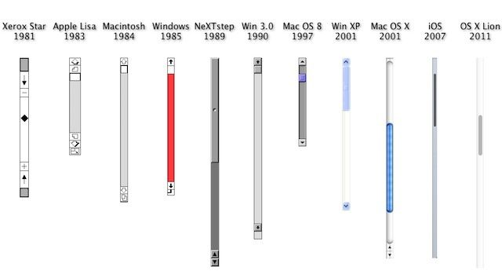
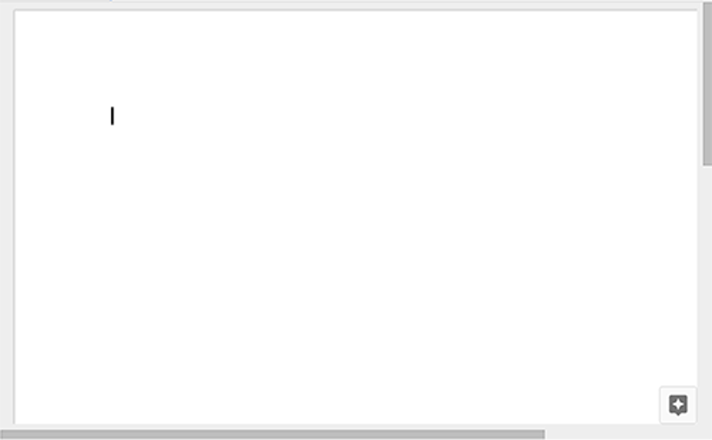
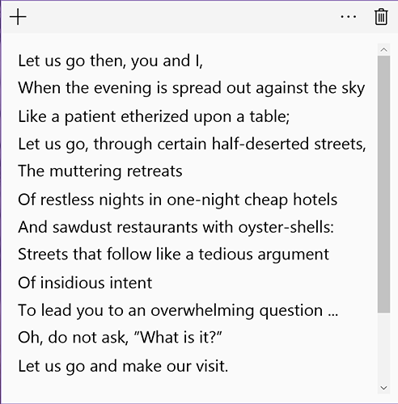
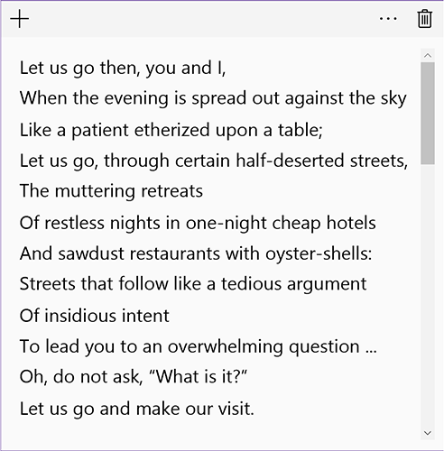
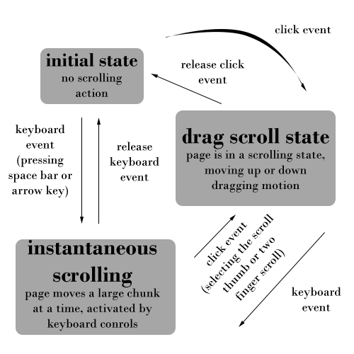

Typical Appearance
The scrollbar has one generally-accepted appearance: a tray on the right side of the computer screen in which a slightly off-colored block, known as the scroll thumb, rests. The shape and color of the tray and thumb vary across different platforms.
Different scrollbar appearances across older Windows and Mac platforms are shown below; the evolution of the scrollbar to a more streamlined and minimalist appearance is evident.
If there is content on the page that is not immediately visible from left to right, scrollbars will also appear on the bottom of a page in a horizontal position identical in appearance to its vertical counterpart. In the image below, the scrollbar native to the Google Documents app provides a horizontal scroll option upon resizing the window:
Typical Behavior
The action of scrolling up or down is universal. The user can move, or scroll, an entire page of content up or down by manipulating the scroll thumb (or one of the variants provided lower). Users can change the direction of their scroll in their settings - this will be discussed further in variants and platform-specific instances.
Across most devices, the scroll thumb will adjust in size to give the user an indication on the size of the document. This is a helpful form of feedback for the amount of content on any given page.

A possible complaint, however, resides in the event that a page has an inordinate amount of content; in this scenario, the scroll thumb becomes very small and difficult to manipulate for some users. Below, the sticky notes app native to Windows demonstrates the change in scrollbar size depending on text amount.
 Events
An event is something that can happen to a user interface component. They are both conceptual and highly concrete in that events very frequently translate directly into a user interface component’s API.
Using the scrollbar component, the most relevant scrolling event is the click. A click event indicates that the user has selected the scrollbar thumb. Secondary events include hover, indicating that a pointing device is explicitly within the bounds of the scrollbar thumb. In the event that the user clicks and holds a scrollbar, the release event is applicable.
The scrollbar will highlight during a hover event and then highlight brighter upon being clicked. This provides a form of feedback that indicates scrollbar response upon additional activity performed.
State Diagram

Scrollbars share the following states because of their similar functionality. The drag and instantaneous "scrolling" states can be viewed as enabled scrolling states, since they must be activated through user interaction. The initial state can also be referred to as dormant, meaning that the user has yet to interact with the scrollbar.
When a scrollbar is enabled, the two possible active states are:
-
dragging scroll: The user is "dragging" the page up or down, whether by directly manipulating the scroll thumb or by taking advantage of the two-finger scroll function of the trackpad. -
instantaneous scroll: The user "skips" across the page with keyboard functions (the up and down arrow keys, the space bar, page up and page down keys, etc.). The effect is an instantaneous jump, rather than a gradual pulling drag of a page.
Variants
-
Two Finger Scrolling
Two finger scrolling, originally introduced by Apple, is a new and more efficient way to scroll through pages on laptops. Although it is an easier tool to use, two-fingered scrolling can be difficult to learn because it is not immediately intuitive. When users scroll down with two fingers on the trackpad, they expect the page to go down. Similarly, when they scroll up, they anticipate the page will move upwards - this movement of the fingers on the trackpad is designed to mimic the action of moving up or down a page of content, akin to when reading a book or document. This intuition is further informed by the way the scroll bar is designed. However, both OS X and Windows 10 introduce two finger scrolling in the opposite manner. This can make it harder and more frustrating for users to adjust to the change. On the other hand, once users are acclimated with this adjustment, it is easier to remember how it works, and they are less likely to forget the motion; essentially, two-fingered scrolling becomes second nature. -
Keyboard Controls
There are alternative ways to scrolling, two of which can be accessed on the keyboard. The arrow keys on the bottom,right-hand side of the keyboard can be used as shortcuts to scroll up and down a page; the down arrow key shifts the page downwards while up moves it upwards. In addition, users can utilize the spacebar to quickly jump down the page and the keyboard shortcutShift+Spaceto scroll upwards. -
Mouse Scroll Wheel
The computer mouse is an accessory that can either be used wirelessly or attached to desktops and laptops. The scroll wheel, located in the middle of the mouse, can act as another scrolling agent. The scroll wheel can be used in two ways; it can either be scrolled or clicked on. Users can manipulate the scroll wheel to scroll up and down a page depending on the settings of their devices. They can also click on the wheel and drag the pointer in the direction they want to travel on a page.

Priority Metrics
- Efficiency: Scrolling is an essential aspect of using modern devices. It allows the user to easily navigate through different windows and quickly get from point A to point B. Therefore, the faster a user can scroll, the faster they can use their devices. In turn, a user could then get more done with less time.
- Memorability and Errors: If the retention over time for scrolling is not effective, it will cause the rate of errors to go up. This is especially important for users who just started using a specific platform. If they are unable to remember the scrolling techniques, causing a large amount of errors, there is a chance that they may switch to a different platform.
- Learnability: It is important that the time it takes to learn scrolling is very short in order for users to focus more on other aspects of their devices. Generally users are able to pick up scrolling relatively quickly because of how it imitates real world physics. For example, if a user wants to scroll down on a page, they drag the window’s scroll bar down.
- Satisfaction: Although some people may find a certain amount of satisfaction in the scrolling capabilities of certain platforms, the act of scrolling eventually becomes second nature to a user. In other words, over time scrolling becomes an action that is hardly thought about by someone using a device. This is due to the fact that scrolling capabilities are designed to be useful and practical rather than overly attractive.
Key Characteristics
We've been given a variety of options to scroll from: which is the best?
According to the iOS Human Interface Guidelines the scrolling gesture should work in a way that feels natural to the user. Therefore, scrolling should emulate real world physics and common thought process. When a user does any action with the downward movement, such as pressing the down arrow key or dragging the scroll bar down, the window should scroll downwards, and vice versa. The only exception to this is the two finger scroll. In this situation, it is the decision of the users whether they would like dragging fingers down to scroll upwards or downwards. Furthermore, it is important to have different variants to provide a user with a majority of ways to scroll in situations that the user finds best.
Consistency:
In all situations where scrolling is an option, the actions to scroll should always be the same. For example if the user can two finger scroll in one window, the user should be able to two finger scroll in every other situation. By doing this, the user does not have to remember different scrolling situations, which would negatively affect learnability and memorability. Additionally, lack of consistency would create a larger amount of errors.
Verdict
Ultimately, it is up to the user as to which method of scrolling is the most efficient and satisfying for them. We have agreed, however, that the addition of two-fingered scrolling to recent platforms is practially essential. Once learning this method, many users rely on it and attest to its simple power. Many a time have I been frustrated when unable to two-finger scroll in the Ubuntu Virtual Machine because of my current system's trackpad predictability. The presence of scrollbar is also extremely desirable in desktop platforms.
Component in Action
Here we have an image of scrolling down a screen: